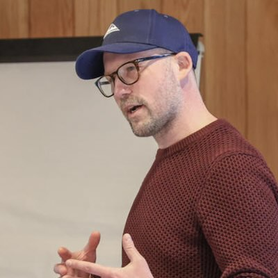

1st Workshop on
Generative Digital Twins for
Real2Sim and Sim2Real Transfer in Robotics
IEEE International Conference on Robotics & Automation (ICRA 2026)
June 1st, 2026 - Hall A3 - Vienna, Austria
This workshop will explore generative digital twin technologies as a pathway to overcoming the persistent gaps between reality and simulation (Real2Sim) and simulation and reality (Sim2Real) in robotics. Despite advances in transfer learning and physics-based simulation, robot policies often underperform when deployed in the real world due to unmodeled dynamics, sensory mismatches, and environmental complexity. Digital twins - high-fidelity, adaptive virtual representations of robots and environments - offer a powerful approach to bridging these divides.
We will focus on generative digital twins, where AI-driven models automatically construct, update, and diversify twins to enhance robustness, adaptability, and scalability. Topics will include: (i) pipelines for digital twin generation (Real2Sim); (ii) benchmarks and case studies for Sim2Real transfer; (iii) learning algorithms leveraging adaptive twins; and (iv) applications across industrial, household, and mobile robotics. The workshop will bring together leading researchers from robotics, machine learning, and computer graphics, fostering interdisciplinary exchange through invited talks, poster sessions, and panel discussions. By highlighting recent advances and charting future directions, this event aims to define a roadmap for how generative digital twins can enable more reliable and generalizable robotic intelligence: Digital Twin Generation from Visual Data: A Survey
| Time | Info | |
|---|---|---|
| 9:00 | Organizers: Introductory Remarks | |
| 9:30 |
Keynote: Hengshuang Zhao Online talk The University of Hong Kong Title: World Model Driven Embodied Intelligence
World model driven embodied intelligence aims to build general agents that use an internal simulator to understand physical laws, predict environmental changes, and execute long horizon complex tasks, providing a pathway to next generation autonomous robots. Guided by the thread “Build-Perceive-Create”, we first analyze the limitations of current world models and propose an egocentric framework for real time immersive interaction in virtual environments. We then develop a physics aware video generation pipeline, showing that conventional approaches often produce outputs inconsistent with physical laws; we address this by injecting physics into representations and sampling through reinforcement learning and generative feedback. To overcome bottlenecks in embodied creation—short horizons, weak instruction following, and limited linguistic diversity, we use sparse point flows to simplify cross modal alignment and improve manipulation precision, while introducing intermediate rewards from a referee LLM to sustain long horizon learning. For deployment, we bridge the sim-to-real gap with geometry-centric perception and hybrid control. Looking ahead, we outline a self-evolving closed loop where world models generate the demanded embodied training data including corner cases, and deficient behavior of embodied agents feeds back the insufficient type of data, yielding systems that transition seamlessly from virtual to the physical world.
|
|
| 10:00 |
Keynote: Steve Xie Online talk Founder & CEO of Lightwheel Title: Building the Continuous Learning System for Physical AI
Physical AI demands orders of magnitude more data than language models, yet real-world data collection alone cannot scale to meet that need. Lightwheel has built and operates a simulation-centric data engine at scale, delivering physically accurate world generation, robot-agnostic behavior data, and rigorous model evaluation. Grounded in real deployment experience serving frontier robotics teams globally, this session offers a practitioner's view on how simulation infrastructure accelerates the development of humanoids and physical AI.
|
|
| 10:30 | Coffee break | |
| 11:00 |
Keynote: Jiajun Wu Stanford Title: Physical Grounding of Generative Digital Twins for Robotics
Much of our visual world has its intrinsic, physical structure: scenes are made of objects; objects have their geometry, texture, material, and physical properties. With the rapid development of neural visual generative models, what role does such structural information play, or do we still need it at all? In this talk, I will discuss our recent efforts to build generative digital twins that are not only visually realistic, but also physically grounded. Beyond reconstruction and generation, I will also demonstrate how these objects can bridge the sim-to-real gap for robotic manipulation.
|
|
| 11:30 |
Keynote: Ajay Mandlekar NVIDIA Title: Removing the Barriers to Simulation Adoption with Automated Environment Construction and Synthetic Data Generation
Real-world robot training and evaluation are costly, labor-intensive, and difficult to scale. While simulation offers a powerful alternative, it is often hindered by high engineering overhead and the persistent sim-to-real gap. This talk explores how to dismantle these barriers. I will introduce a system that automatically generates digital twins and "cousins" from real-world videos, streamlining both policy training (real-to-sim-to-real) and evaluation (real-to-sim). Finally, I will discuss scaling policy training with simulation to complex, non-traditional domains, including deformable object manipulation and humanoid loco-manipulation.
|
|
| 12:00 | Spotlight talks | |
| 12:30 | Lunch & Poster session | |
| 14:00 |
Keynote: Manolis Savva SFU Title: Digital Twins for Embodied AI: Advancing the Frontier of Realism and Interaction
blank
|
|
| 14:30 |
 |
Keynote: Ingmar
Posner Oxford Title: Back to the Future: A Case for Structured Representation Learning in World Models
World Models are not a new idea and have been central to the robotics endeavour almost since its inception. Yet, catalysed by advances in deep generative models, world models are now seemingly everywhere in robot learning. As ever, they hold promise to provide a predictive substrate capable of supporting forward planning, as well as safe and efficient policy learning entirely in imagination. Moreover, contemporary world models in principle allow us to bypass the traditional real-to-sim and sim-to-real gaps entirely by learning directly from real-world observations. Yet currently this comes at the cost of prohibitive data and compute requirements. Success largely relies on scaling laws. This causes many of the issues commonly discussed in robotics contexts, such as a distinct lack of physical grounding and unphysical hallucinations as opposed to realistic forward predictions particularly in lower data regimes. In this talk, I will make the case that, while we are effectively revisiting an old concept with new methods, it is time to resurrect more of our previous thinking. In particular, let’s abandon our reliance on pure scaling in favour of structured representation learning for world models. I will motivate this vision and outline the foundational research from my lab toward a new class of Mechanistic World Models, where structured representation learning is used to break down dynamical systems into fundamental mechanisms that capture re-usable interaction patterns and local causal dependencies.
|
| 15:00 |
Keynote: Ken Goldberg UC Berkeley Title: Real2Render2Real: Scaling Robot Data Without Dynamics Simulation or Robot Hardware
Scaling robot learning requires vast and diverse datasets. Yet the prevailing data collection paradigm—human teleoperation—remains costly and constrained by manual effort and physical robot access. We introduce Real2Render2Real (R2R2R), a novel approach for generating robot training data without relying on object dynamics simulation or teleoperation of robot hardware. The input is a smartphone-captured scan of one or more objects and a single video of a human demonstration. In contrast to simulation, R2R2R renders thousands of high visual fidelity robot-agnostic demonstrations by reconstructing detailed 3D object geometry and appearance, and tracking 6-DoF object motion. R2R2R uses 3D Gaussian Splatting (3DGS) to enable flexible asset generation and trajectory synthesis for both rigid and articulated objects, converting these representations to meshes to maintain compatibility with scalable rendering engines like IsaacLab but with collision modeling off. Robot demonstration data generated by R2R2R integrates directly with models that operate on robot proprioceptive states and image observations, such as vision-language-action models (VLA) and imitation learning policies. Over 1000 physical experiments suggest that models trained on R2R2R data from a single human demonstration can match the performance of models trained on 150 human teleoperation demonstrations. (Joint work with Justin Yu, Letian Fu, Huang Huang, Karim El-Refai, Rares Andrei Ambrus, Richard Cheng, and Muhammad Zubair Irshad.)
|
|
| 15:30 | Coffee Break | |
| 16:00 |
Keynote: Oier Mees Online talk Microsoft Title: blank
blank
|
|
| 16:30 | Discussion. Panelists: Hengshuang Zhao, Steve Xie, Ajay Mandlekar, Jiajun Wu, Manolis Savva, Ingmar Posner, Ken Goldberg, Oier Mees |
|
| 17:30 | Organizers: Closing Remarks |
Loading papers...
The gDT-IV Workshop at ICRA 2026 welcomes submissions on all aspects of generating digital twins from images and videos, especially (but not limited to):
We welcome Non-Archival contributions, submitted via the OpenReview portal. Specifically, we welcome a wide range of contributions including extended abstracts & short papers (up to 8 pages, suitable for work in progress, negative results, or position papers; references and appendices may extend beyond 8 pages) and previously published work (including papers accepted at ICRA 2026 or other venues in the last year). All submissions should be formatted with the ICRA 2026 Author Kit. Submissions remain double-blind for review but will not appear in proceedings. Thus, papers that have already been published at major conferences are also welcome. Authors may also submit their work to future conferences or journals after acceptance to this workshop.
Dual CVPR 2026 submissions must follow the dual submission policy. In brief: peer‑reviewed workshop papers longer than four pages (excluding references) are considered publications; we then encourage to submit the same work to the ICRA 2026 workshop if no longer than 4 pages.
Submit via OpenReview Real2Sim2Real Submission Portal
Authors planning to submit are strongly encouraged to create their OpenReview profiles well in advance of the submission deadline.
Please note OpenReview's moderation policy for newly created accounts:
To avoid last-minute issues with submission access, we recommend registering early and, when possible, using an institutional email address.
As part of your contribution to the workshop, we kindly ask that the authors of each submitted paper collectively complete three reviews of other submissions. We hope this offers a valuable opportunity to engage with and learn from other work in your area of interest, and it is essential for ensuring the review process runs smoothly. Please note that papers whose authors do not make the required review contribution may be subject to desk rejection. The review process will be double-blind. Reviews will only be accessible to the chairs, reviewers, and authors. The deadline for submitting reviews is April 5th, Anywhere on Earth (AOE).